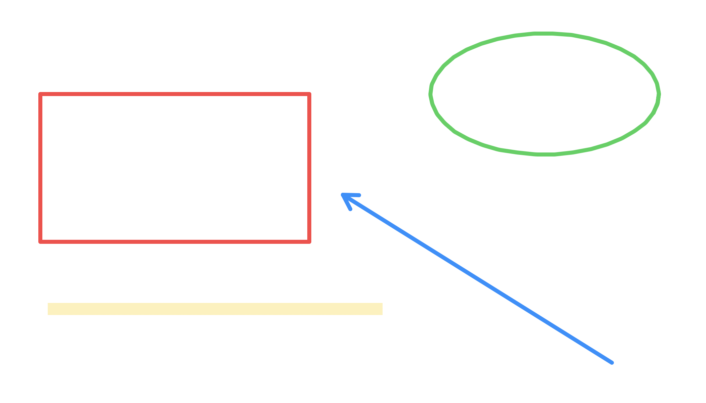
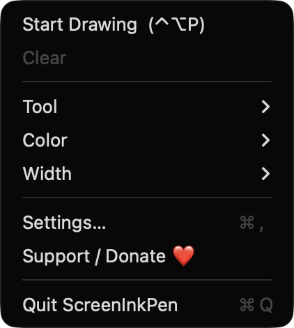
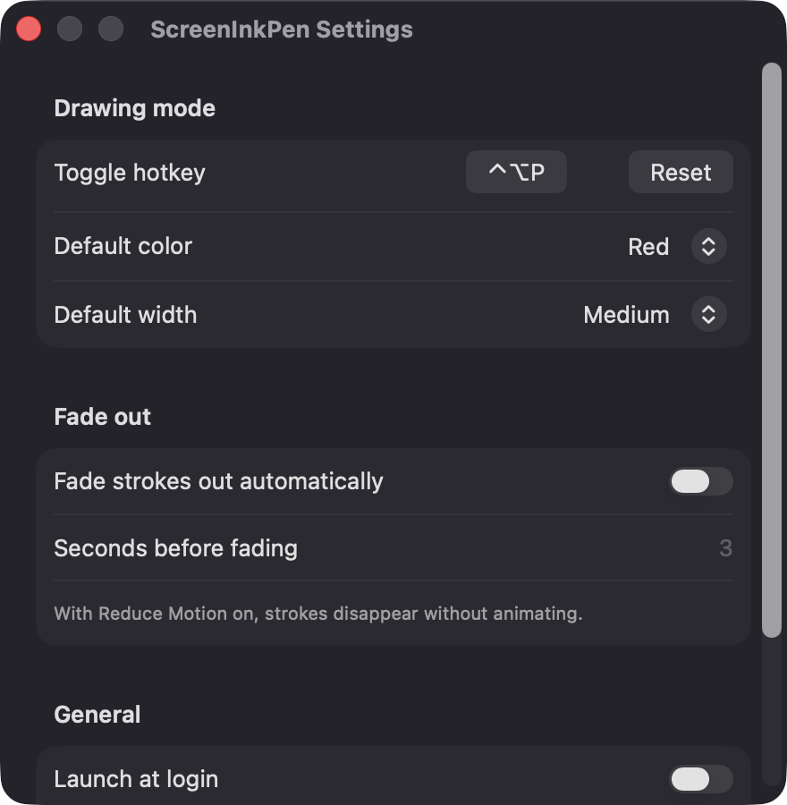

Global hotkey, rebindable
Toggle drawing mode from any app with Control-Option-P by default. Record a different shortcut in Settings with a single click.
Open source · macOS 14+ · Universal binary · Presentation & Cursor
ScreenInkPen puts a transparent ink layer over every display so you can point, circle and annotate during demos and calls. Press Control-Option-P to start drawing.
Free & MIT licensed · Apple Silicon & Intel · Latest release

Features
A small menu bar app with the tools presenters actually use, and nothing that gets in the way.
Toggle drawing mode from any app with Control-Option-P by default. Record a different shortcut in Settings with a single click.
Pen, highlighter, line, arrow, rectangle, ellipse and eraser, each one key away. The highlighter blends with multiply so text underneath stays readable.
A transparent overlay covers each screen, across Spaces and over full-screen apps. Overlays are rebuilt when you plug in or remove a monitor.
Let strokes disappear on their own after a number of seconds you choose. With Reduce Motion on, they vanish without animating.
A floating toolbar offers tools, five colors, three widths, undo, clear and stop. It never steals focus from the app you are presenting.
Step back up to 200 strokes with Command-Z, redo with Shift-Command-Z, wipe everything with Delete, or press Esc to clear and exit.
Screenshots


Install
ScreenInkPen is open source and not notarized with a paid Apple Developer ID, so macOS needs one extra step the first time.
xattr -cr /Applications/ScreenInkPen.app
Download
Free, forever. Built for macOS 14 Sonoma or newer, Apple Silicon and Intel.
Not notarized: on first launch right-click ScreenInkPen.app → Open.
FAQ
Yes. It is released under the MIT license, and the full source is on GitHub. There is no paywall, and optional donations are accepted through Ko-fi.
None. The global hotkey uses Carbon's RegisterEventHotKey, so Accessibility is not required, and the app only draws its own windows, so Screen Recording is not required either. If you enable Launch at login, macOS may list it under Login Items.
Only on your Mac. Your preferences, such as the hotkey, default color and width, and fade settings, are kept locally in UserDefaults. The app makes no network calls and includes no analytics.
Notarization requires a paid Apple Developer account, and this is a free project. The first time you open it, right-click the app and choose Open, or build it yourself from source with Xcode.
Yes. ScreenInkPen was generated by Claude Code from a written spec as a clean-room reimplementation, with no code or assets from any commercial app. The full source is on GitHub under MIT, so you can read every line before you run it. It has had less human review than a hand-written app, so bug reports are welcome.
Support ❤️
ScreenInkPen is a free, open-source alternative to paid utilities. If it earns a spot on your Mac, a coffee keeps the updates coming.
☕ Support Or on Ko-fi